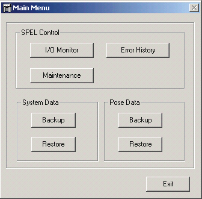
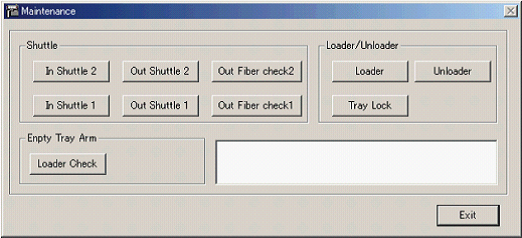
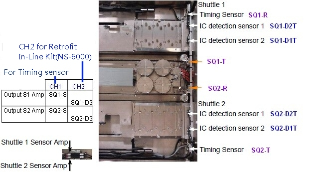
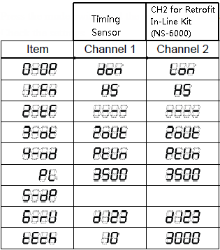
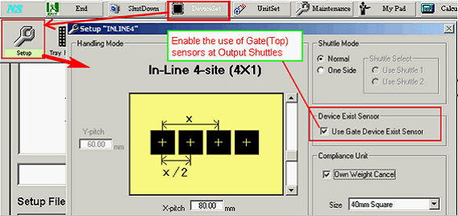
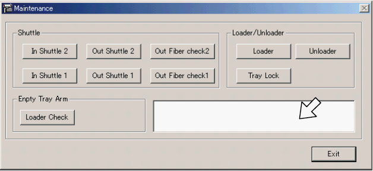

A4-2 How to adjust about device detection gate sensor of Output shuttle ( 2 )
Gate sensor fiber type adjustment for NS-8080 / NS-8080W / NS-8160W / NS-8160SW
Unloading side shuttle Sensor Adjustment (Fiber type)
* This is an excerpt from the manual: NS8000 series Users Manual: 11.
Checking Sensor and Operation - 11.2 Unloading side Shuttle
NOTE When testing device is changed, check the sensors and operations from the [Maintenance] dialog.
To display the [Main Menu] Dialog
(1) Click the [Maintenance]-<Controller> icon and show the [Main Menu] dialog.

(2) Click the [SPEL Control] group box-<Maintenance> button.
The [Maintenance] dialog appears.

11.2.2 Adjusting and Checking the IC Detection Sensor of Unloading side Shuttle NS8080 / NS8080W / NS8160W / NS8160SW
Layout of the Sensor and Amp NS8080 / NS8080W / NS8160W / NS8160SW

Checking the setting of the Sensor and the Amp
NS8080 / NS8080W / NS8160W / NS8160SW
(1) Switch the SET/RUN selector switch to “SET”.
(2) Set the channel selector switch to the corresponding Shuttle number (1, 2).
(3) Press the mode switch and the settings are displayed in the following item order. Check the settings.

Remarks:
i) For Square kit, Fiber sensor check Timing. Top sensors check Device Presence.
ii) For Retrofit In-Line Kit, Fiber sensor check Timing And Device Presence.
(Top sensor not use.)
iii) When using the "In Line 2" or "In Line 4" change kit(Not Retrofit kit), in HMI,
click [DeviceSet]->[Setup],
tick "Use Gate Device Exist Sensor"

Adjusting the IC Detection Sensor of the Unloading side Shuttle
NS8080 / NS8080W / NS8160W / NS8160SW
(1) Make sure that there are no devices on the pockets of unloading side Shuttle 1.
(2) Move the unloading side Shuttle 1 manually and align the Shuttle pocket slit of the Index Unit side to the timing sensor position. Slightly move the shuttle back and forth to position and display the highest value on the digital display.
(3) Hold the MODE key on the sensor amp for more than three seconds. The output of the sensor amp is adjusted automatically. When the adjustment completes, the digital display shows approximately 3500.
(4) Follow the same procedure for unloading side Shuttle 2 to adjust the IC detection sensor.
Checking the IC Detection Sensor of the Unloading side Shuttle
NS8080 / NS8080W / NS8160W / NS8160SW
(1) Click the <Out Shuttle 1> button in the [Maintenance] dialog.
(2) Press the RETRY button on the Operation Panel. The Shuttle moves to the index position and the IC unloading position. The IC detection result is displayed on the HMI. (Detected: O / Undetected: X)

(3) Press the PAUSE button on the operation panel and open the door.
(4) Place devices on the pocket of unloading side Shuttle 1 and 2.
(5) Close the door and press the START button.
(6) Execute step (2) and check the sensor.
(7) Regarding the loading side Shuttle 2, click the <Out Shuttle 2> button and follow the same procedure as <Out Shuttle 1>.